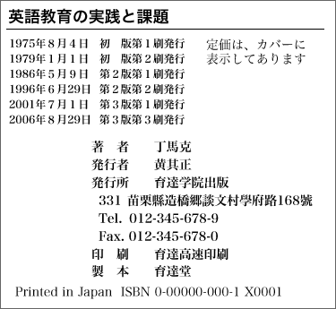
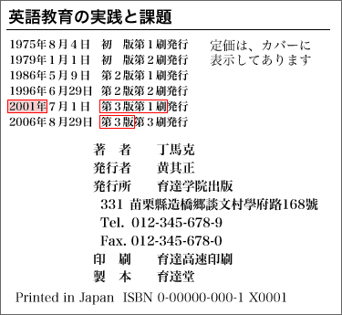

書籍の発行年を調べる方法
奥付

日本の書籍の場合、奥付（書籍の最後のページ）に書籍の情報がまとめて記されているのが普通である。
そのため、日本の書籍の場合は、奥付を見れば書籍の発行年を調べることができる。
また、奥付には、発行年のほか、著者・発行者などの情報も記されている。
「版」と「刷」
奥付の発行年の部分には、さまざまな日付が記されていることがある。このような場合、参考文献リストに書く「発行年」は次のようにする。
まず、自分が使用した書籍の「版」が何版かを確認する。このとき、「１刷」、「２刷」などの「刷」の部分は無視して構わない。
自分が使用した書籍が何版かは、発行年の表示の最後の部分を見ればわかる。下の例の場合、この書籍の版は「第３版」である。

次に、自分が使用した書籍の版の「第１刷」または「初刷」がいつかを調べる。上の例では、「第３版」の「第１刷」は「2001年7月1日」であることがわかる。そして、この日付が参考文献リストに書く発行年となる。
したがって、参考文献リストで、この書籍は次のように書くことになる。
丁馬克（2001）『英語教育の実践と課題』育達学院出版.
発行年の決め方の具体例
- 1997年５月７日 初版発行
- 1998年５月７日 改訂版発行
- 2002年５月７日 第３版第１刷発行
- 2004年５月７日 第３版第３刷発行
発行年：2002年
「第３版第１刷」の発行年を書けばよい
「初版」は「第１版」とも書かれる
- 1974年５月７日 第１刷発行
- 2004年５月５日 第122刷発行
発行年：1974年
版の表示がない場合は、「初版」である
- 1986年３月１日 初版発行
- 1996年５月１日 改訂新版発行
- 2006年８月１日 第５刷発行
発行年：1996年
「改訂新版」や「改訂版」とあるのは「第２版」である
- 1999年８月８日 初版発行
- 2005年４月４日 ２刷発行
発行年：1999年
ここで「２刷」とあるのは「初版第２刷」である
- 1959年10月10日 第1刷発行
- 1993年11月16日 第37刷改版発行
- 2002年12月15日 第42刷発行
発行年：1993年
初版から通算して「第42刷」だが、「改版発行」とあるので、現在の版は「1993年」に発行された「第２版」である